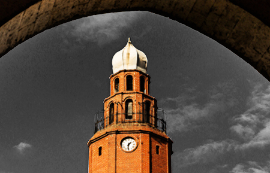
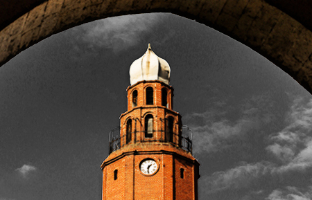

The Macedonia Square
Macedonia Square, the main square of Skopje, is located in the city centre and occupies a total of 18,500 square metres. It was build between 1920 and 1940, but was constantly reconstructed to create its present day look. It is the main part of the city where locals as well as tourists like to stop for a break during the day.The three main streets that merge onto the square are Maksim Gorki, Dimitar Vlahov and Street Macedonia. Dimitar Vlahov Street was converted into a pedestrian street in 2011. Maksim Gorki, while not a pedestrian zone, is lined with Japanese Cherry trees, whose blossoms in spring mark a week-long series of Asian cultural events. Finally, Macedonia Street, the main pedestrian street, connects Macedonia Square to the Old Railway Station. Nearby, statues of former rulers and saints seem to be crammed by the dozen into all available spaces, along with the city’s own arc de triomphe.
The statue and fountain "Warrior on a horse" is probably the most symbolic one for Skopje as a part of the reconstruction project called "Skopje 2014". It is typically thought to depict Alexander the Great, though it is not officially named after him. The bronze sculpture is the tallest one on the Balkan peninsula [14.5 m] and consists of three large ivory sections, each separated by a thinner bronze ring. The column stands in a fountain. At the base of the column are 8 bronze soldiers, 8 bronze lions, around the edges of the fountain pool, four of which act as part of the fountain, releasing water from their mouths.
The Stone Bridge
The Stone Bridge is a bridge across the Vardar River, which connects Macedonia Square to the Old Bazaar. The bridge is considered a symbol of Skopje and is the main element of the coat of arms of the city, which in turn is incorporated in the city's flag. The Stone Bridge is built of solid stone blocks and is supported by firm columns that are connected with 12 semicircular arcs. The bridge is 214 m (702 ft) long and 6 m (20 ft) wide. The current Stone Bridge was built on Roman foundations under the patronage of Sultan Mehmed II the Conqueror between 1451 and 1469. Throughout the centuries, the Stone Bridge was often damaged and then repaired. The last reconstruction of the bridge began in 1994. The watchtower shaped like a mihrab was reconstructed in 2008. Some executions have also taken place on this bridge, such as the execution of Karposh in 1689.
The Art Bridge
The Art Bridge is a pedestrian bridge across the Vardar River which features many statues of noted Macedonian artists and musicians. It was built as part of the larger Skopje 2014 project, with an estimated construction cost of €2.5 million. The bridge includes 29 sculptures, with 14 at each side and one in the centre. It is 83 metres (272.3 feet) in length and 9.2 m (30.2 ft) in width, while the central part of the bridge is 12 m (39.4 ft) wide.
The Memorial house of Mother Teresa
The memorial house was built on the popular Macedonia Street in the Centar municipality, on the very location of the once Sacred Heart of Jesus Roman Catholic Church, where Mother Teresa was baptized.It is a modern, transformed version of Mother Teresa's birth house with a multifunctional but sacral character. Inside the house, part of her relics are preserved, which were transferred to Skopje with support of the Roman Catholic Church of Skopje. There is a museum which includes realistic sculptures of Mother Teresa and members of her family. One sculpture shows Mother Teresa as a ten-year-old child, sitting on a stone and holding a pigeon in her hands. The house also hosts cultural exhibits and includes a gallery.
The Old Bazaar
The Old Bazaar is situated on the eastern bank of the Vardar River, stretching from the Stone Bridge to the Bit-Pazar and from the Skopje Fortress to the Serava river. As one of the oldest and largest marketplaces in the Balkans, it has been Skopje's centre for trade and commerce since at least the 12th century.Beside its importance as a market place the Old Bazaar is known for its cultural and historical values. Although Ottoman architecture is predominant, remains of Byzantine architecture are evident as well, while recent reconstructions have led to the application of elements specific to modern architecture. The Old Bazaar still is home to several active mosques, türbes, two churches and a clocktower, that, together with the buildings of the Museum of Macedonia and the Museum of Modern Art, form the core of the modern bazaar.
{kind=link}
 Daut Pasha, Grand Vesir of East Rumelia, constructed this hamam in the 15th century. It is one of the most famous monuments of the Islamic profane architecture in Macedonia.
The building consists of
fifteen rooms covered by thirteen domes. The two largest domes covered the two changing rooms and the rest of the domes covered
individual bathing rooms.Since 1948, the Daut Paşa Hamam has housed the National Art Gallery.
The Clock Tower

In the yard north of Hjunkjar Mosque of Sultan Murat II, rises a six sided clock tower, built in the 16th century.
The traveler writers Evliya Çelebi and Haji Kalfa mention it in their writings - that it was basically hexagonal, and its upper part
was wooden construction, which in 1904 was replaced with a solid material.
In 1963, after the Skopje earthquake, the clock tower was brought to the
original state, but without the clock mechanism.
Daut Pasha, Grand Vesir of East Rumelia, constructed this hamam in the 15th century. It is one of the most famous monuments of the Islamic profane architecture in Macedonia.
The building consists of
fifteen rooms covered by thirteen domes. The two largest domes covered the two changing rooms and the rest of the domes covered
individual bathing rooms.Since 1948, the Daut Paşa Hamam has housed the National Art Gallery.
The Clock Tower

In the yard north of Hjunkjar Mosque of Sultan Murat II, rises a six sided clock tower, built in the 16th century.
The traveler writers Evliya Çelebi and Haji Kalfa mention it in their writings - that it was basically hexagonal, and its upper part
was wooden construction, which in 1904 was replaced with a solid material.
In 1963, after the Skopje earthquake, the clock tower was brought to the
original state, but without the clock mechanism.
{kind=link}
{kind=link}
{kind=link}
{kind=link}
The Kale Fortress
The Skopje Fortress, commonly referred to as Kale, is a historic fortress in the old town, situated on the highest point in the city. Thought to have been built in the 6th century AD, Skopje’s fortress is its most famous symbol, also depicted on the city's coat of arms.{kind=link}
{kind=link}
The Skopje Aqueduct
The Skopje Aqueduct, located north of the city center, is the largest of the three preserved buildings of its kind on the Balkan Peninsula. Assumptions about the time of construction is moving in a time frame of the first half of VI century (the Byzantine emperor Jusitinajan) to the XVI century (when in Skopje were built nearly all baths and the city had a constant need for large water supply). It is assumed it was still in use at the end of XIX century. The lower part of the Aqueduct consists of 53 square or rectangular pillars and 2 lateral ramps - north and south, with their foundations.The frontal walls are of mixed masonry, stone and brick in lime mortar, with archivoltes and external arches of brick. The façade screens on both sides end up with a chain of brick, over which there is a longitudinal walling also of mixed masonry.